EARLIER THIS WEEK I TWEETED out a poll asking whether or not folks wanted to see a thread/tweetstorm with slides from an upcoming presentation on the economy and housing markets that I’m giving. Over 90 percent voted for a thread. So I shared it. In this post let me add a little more commentary on the individual slides.
Here’s the thread I ended up posting:
Thread (0/5). I'm giving an update on economy, #housing and #mortgage market trends. Here are some highlights from my totally awesome slidedeck.
— 👻📈 Len Kiefer 😱📊 (@lenkiefer) February 7, 2018
5 topics: summary slide plus bonus charts pic.twitter.com/KX5IDnP8W0
Let me share the tweets and then add commentary or links to R code for the individual plots where I’ve posted code previously.
The talk
Like I say in my tagline, I help people understand the economy, housing and mortgage markets. Often that involves giving a presentation. Sometimes it’s a big ballroom presentation, but more often than not it’s in a small group setting, a conference call, or a webinar. Many of these slides, appropriately updated, are part of my core deck. I’ll augment with topical slides and extra detail as required.
Let’s unpack my thread and add a bit of commentary as appropriate. By doing so, I’ll give you a flavor of my general presentation strategy.
Summary
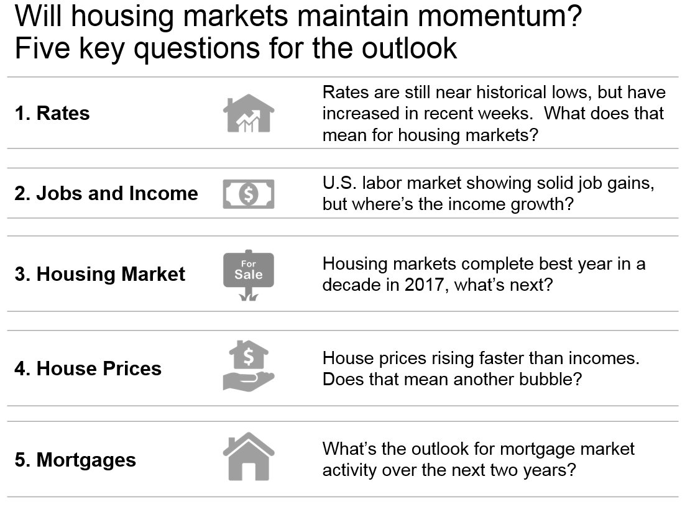
In this summary table I lay out the agenda. I’ll get to that, but I want to talk format briefly. I like to use this style to lay out an agenda or other information as an alternative to bullets. There’s an article by Jon Moon “TIME TO BAN THE BULLET” that makes a case for this layout, called “Words in Table”. See his book Clarity and Impact. I’ve found words in table to be an effective alternative to bullets, though you’ll see I didn’t exactly ban them here.
I like to structure a talk around three or five (though almost never four) questions. Because I’m giving a briefing on housing and mortgage market trends I devote most of my space to talking housing market trends. And for each topic I lay out a central question I’ll try to address.
Mortgage Rates
U.S. mortgage rates are still near historical lows, but have increased in recent weeks. What does that mean for U.S. housing markets?
Note: My audience for this talk is going to be in the U.S. so “U.S.” is implicit, but I know I get readers from around the world so I try to make an effort to indicate when I’m talking about the U.S. here on the blog and in Twitter.
We’ve talked about how Mortgage rates are low!. In my remarks I’m going to talk about how recent increases might impact U.S. housing markets.
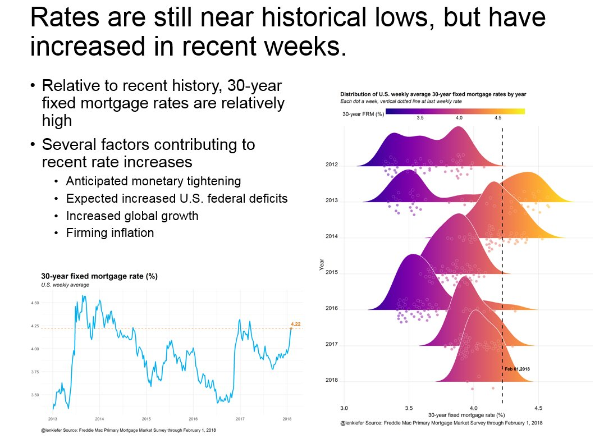
Just a couple days ago I shared with you code how to make this plot comparing periods of recent mortgage rate increases.
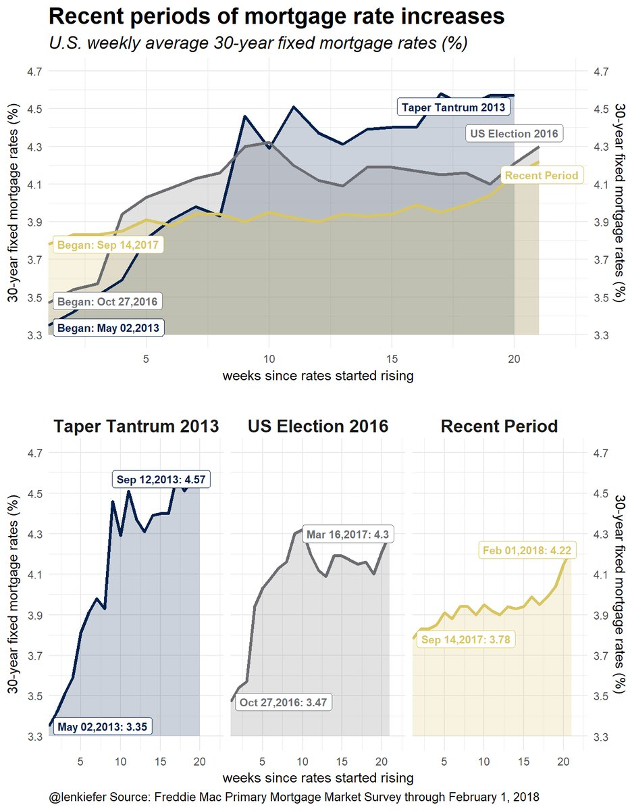
During the 2013 experience (called the Taper Tantrum), how did U.S. housing markets respond to higher rates?
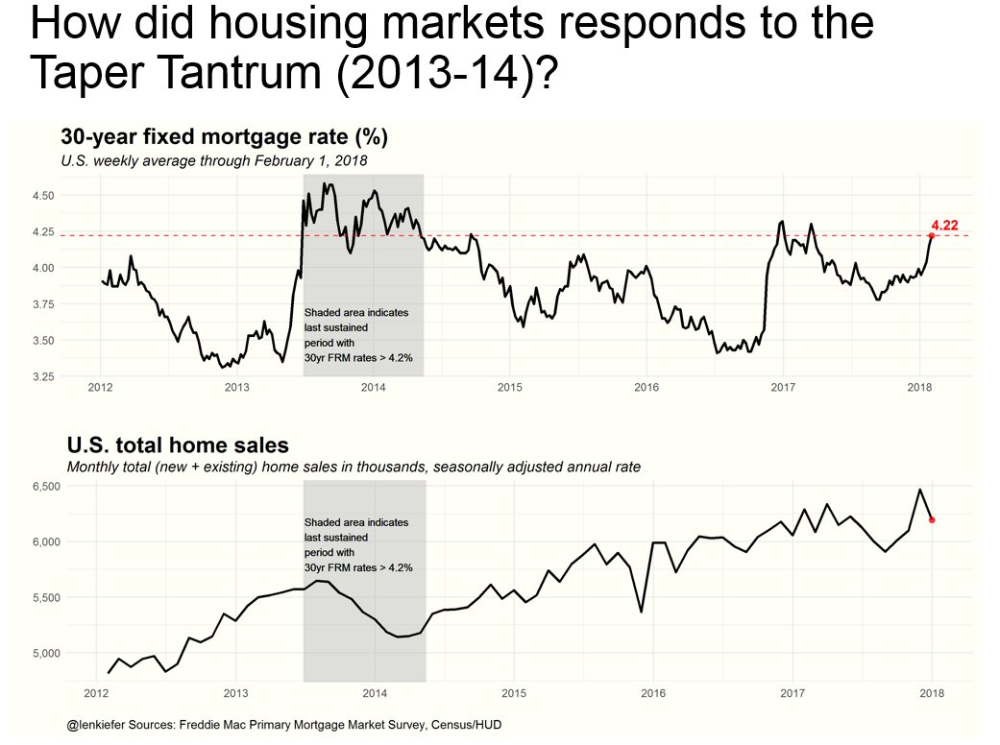
But the U.S. economy is in a better situation in many ways compared to 2013, so perhaps home sales will maintain momentum. One way the economy is different is due to a stronger labor market.
Jobs
The U.S. labor market is showing solid job gains, but where’s the income growth?
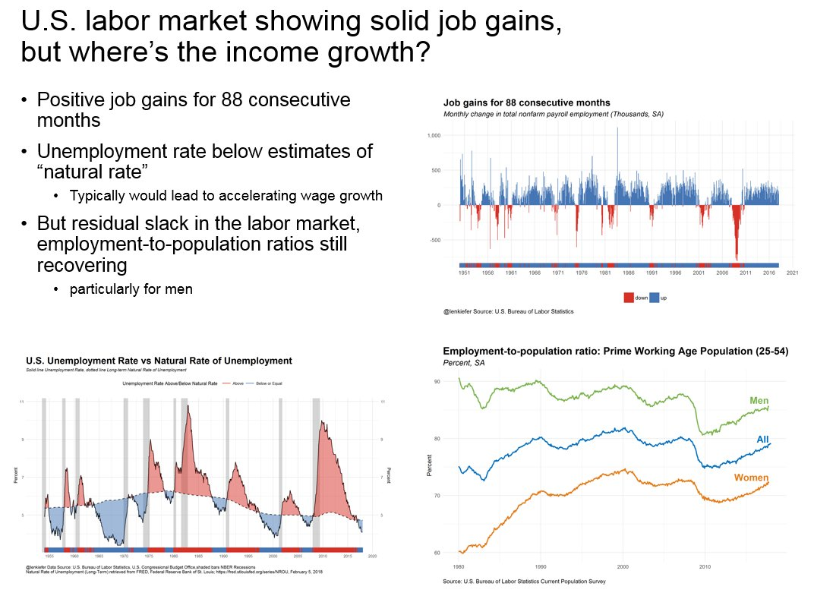
In this slide we look at three things:
- Employment growth
- The unemployment rate
- The employment to population ratio
Job gains for 88 consecutive months
That’s the longest streak in U.S. postwar history. I like to combine the rug plot (the strip at the bottom) with a color coded bar chart.
U.S. Unemployment Rate vs. Natural Rate of Unemployment
We’ve made this graph in my post PLOTTING U.S. MACROECONOMIC TRENDS WITH FRED AND R. The unemployment rate is below most economists estimates of the natural rate, implying that U.S. wages ought to be accelerating. But so far, we haven’t seen accelerating wages.
Employment-to-population ratio
Of course, the unemployment ratio doesn’t tell the whole stories. As pointed out by many, including Adam Ozimek, on Twitter [@ModeledBehavior](https://twitter.com/ModeledBehavior), and beautifully illustrated in the New York Times LINK the unemployment gap largely disappears if you look at the employment-to-population ratio rather than the unemployment rate.
I also have a couple other charts comparing employment growth across the cycle.

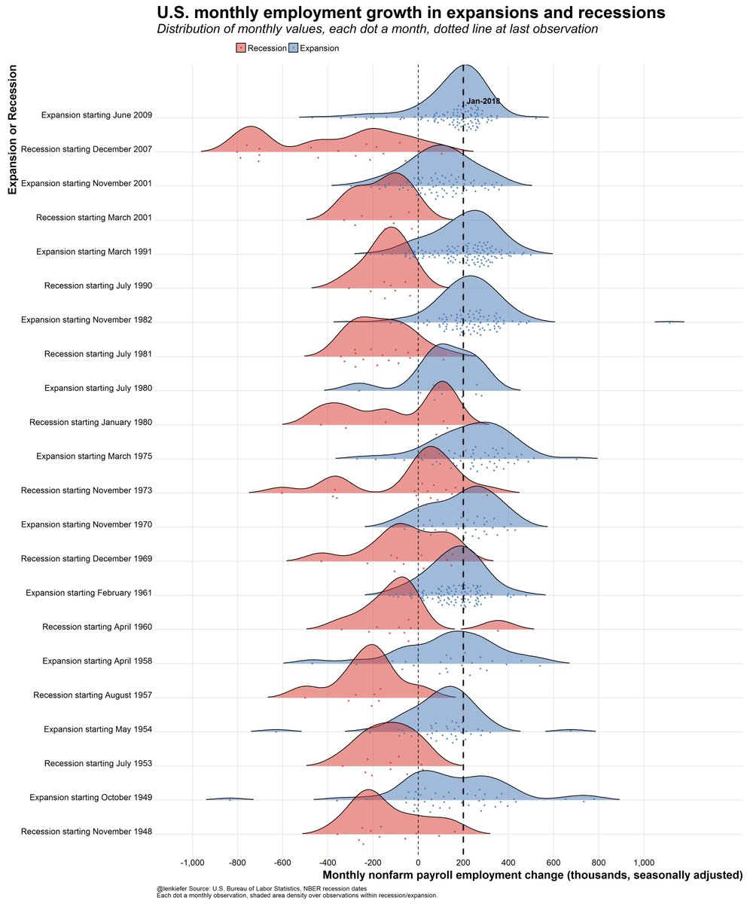
I don’t think I’ve shared code for these plots yet, but if a few people ask me I will in a future post.
U.S. housing markets had best year in a decade in 2017. What’s next?
By a variety of metrics, U.S. housing markets had their best year in a decade in 2017. Will they maintain momentum in 2018?
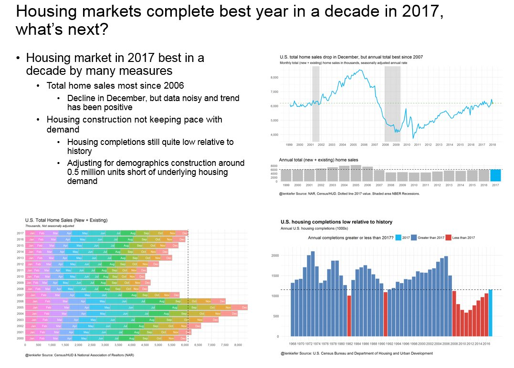
Three charts here. The top right and bottom left plots show home sales. The bottom right plot looks at housing completions.
Here’s a solid thread on Twitter covering home sales:
With the release of new home sales data today and existing home sales yesterday, we have full year home sales for 2017. Highest total since 2006.
— 👻📈 Len Kiefer 😱📊 (@lenkiefer) January 25, 2018
Thread 1/6 pic.twitter.com/z3mUkbd7Wk
And this thread talks about housing construction.
Thread: U.S. residential construction
— 👻📈 Len Kiefer 😱📊 (@lenkiefer) January 18, 2018
1) #housing starts remain low relative to history pic.twitter.com/hTb1QoOEsG
Also, see my post charting housing starts with R to learn how to make many of these plots in R.
Home builders are confident about the housing market, perhaps they will start building more units in 2018 adding much needed housing supply.
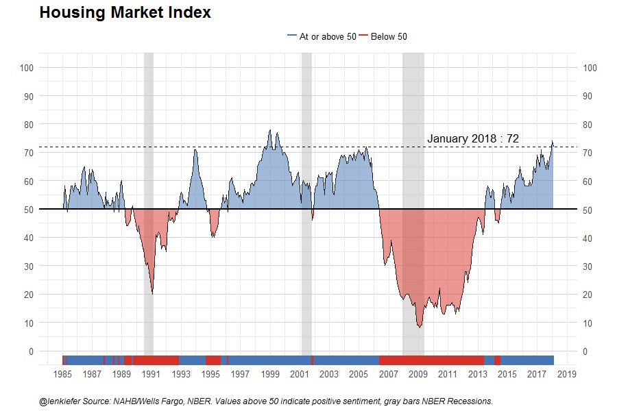
I didn’t include this in the talk, but here is an animated gif comparing home sales by year, month by month:

House price trends
We’ve talked a lot about house prices trends here.
U.S. house prices are increasing at a nearly 7 percent per year pace.
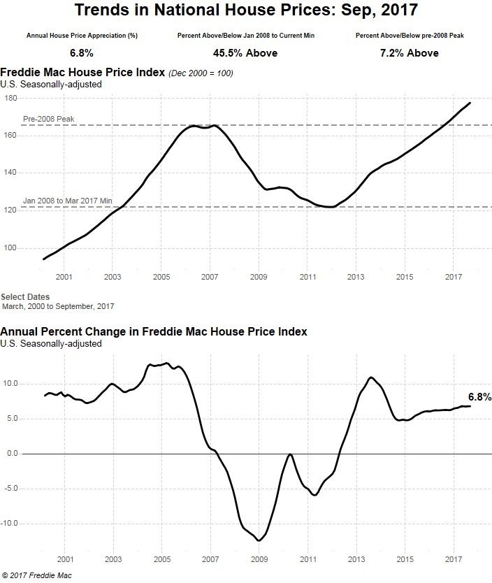
That growth is outpacing income.
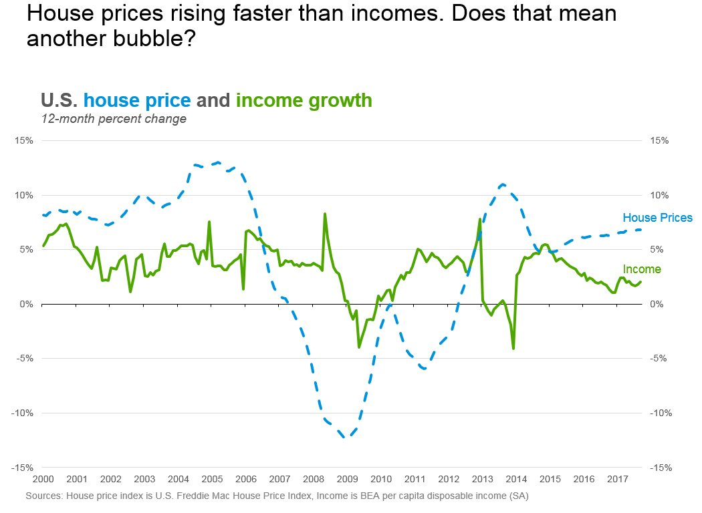
I’ll also talk a little bit about regional trends.
These next two charts cover some regional (state) price trends and came from this post: Recent Trends IN U.S. Housing Markets: 2017Q3 Update
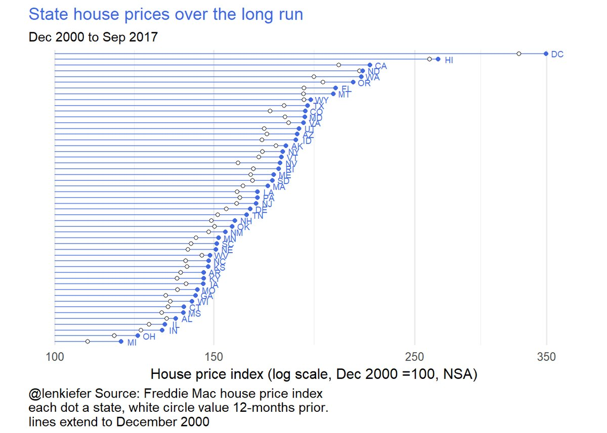
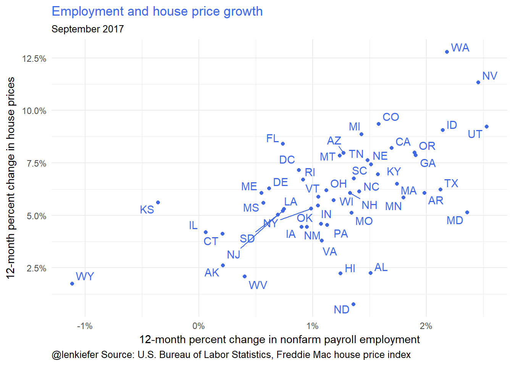
Mortgage originations
My day job involves talking mortgage origination trends. Here’s a visualization of a recent forecast of U.S. single-family mortgage origination activity.
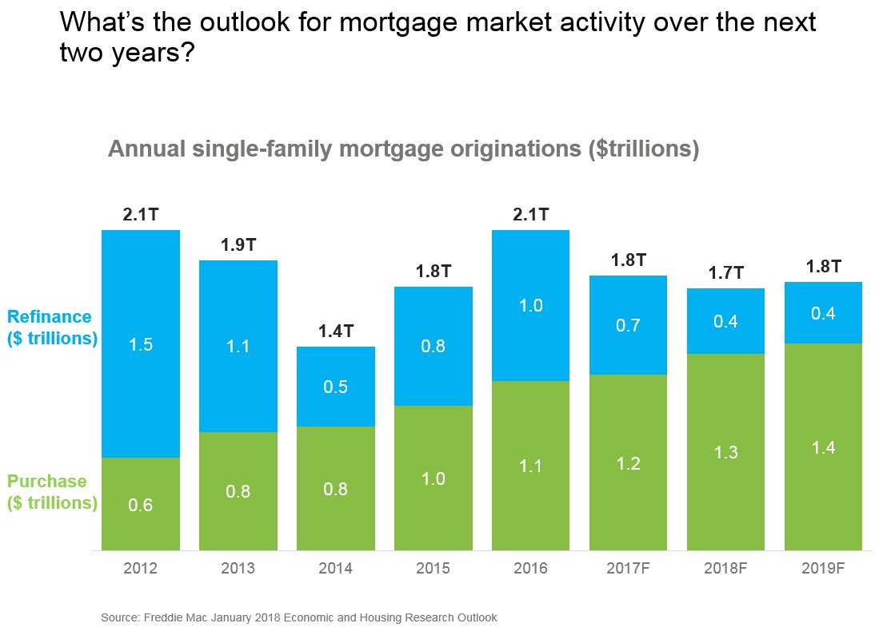
Most analysts are expecting mortgage refinance volumes to contract given higher mortgage rates. If home sales maintain momentum and home price growth remains positive, then purchase mortgage originations will likely rise.
Summary
If you’ve been following along you’ve probably seen many of these charts before. But I wanted to lay them out all in one place and give you a little bit of a sense of how I’d stack them up in a presentation.